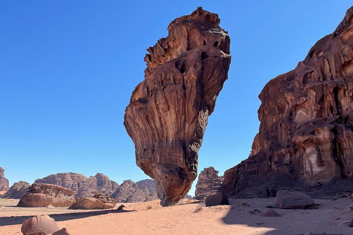

Najran Tours
Najrān, is a city in southwestern Saudi Arabia near the border with Yemen. It is the capital of
Najran Province. Designated as a new town, Najran is one of the fastest-growing cities in the
kingdom; its population has risen from 47,500 in 1974 and 90,983 in 1992 to 246,880 in 2004 and
381,431 in 2021. The population mostly originates from the ancient tribes

Taif
Taif is a city and governorate in the Mecca Province of Saudi Arabia. It is located at an elevation of
6,165 feet (1,879 meters) on a tableland southeast of Mecca. Taif is the 6th most populous city in
Saudi Arabia. It is known for its abundant natural beauty and is often declared the best summer
destination in Saudi Arabia. The city is also known for the cultivation of grapes, figs, pomegranates,
and honey
Taif is good city also with pretty places and weather